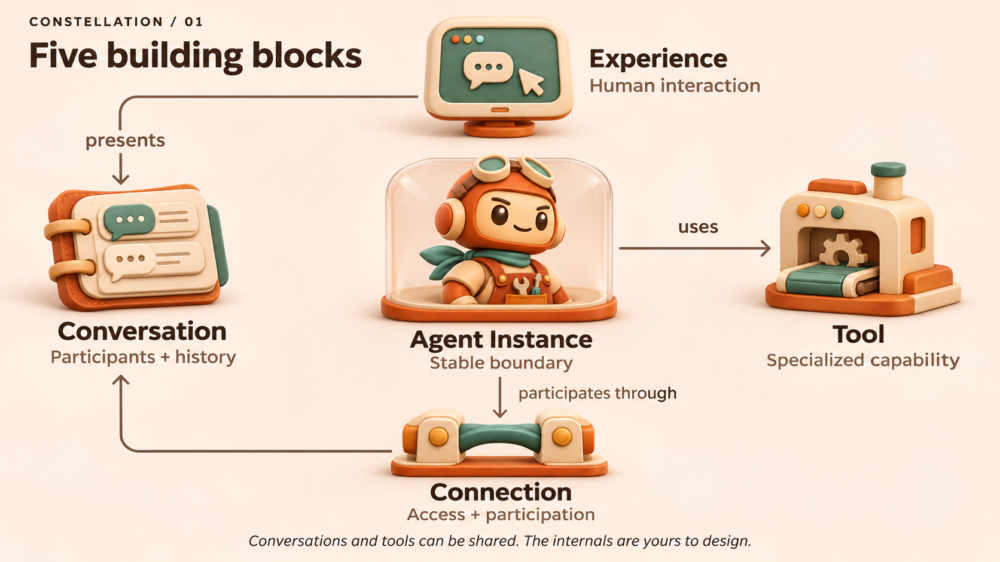
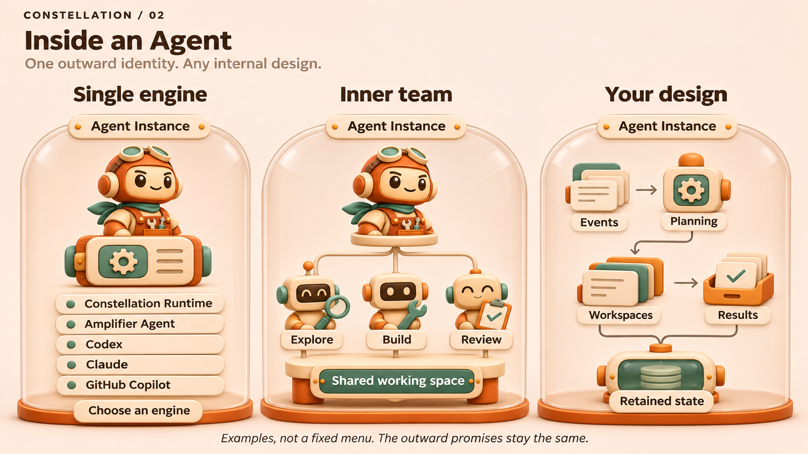
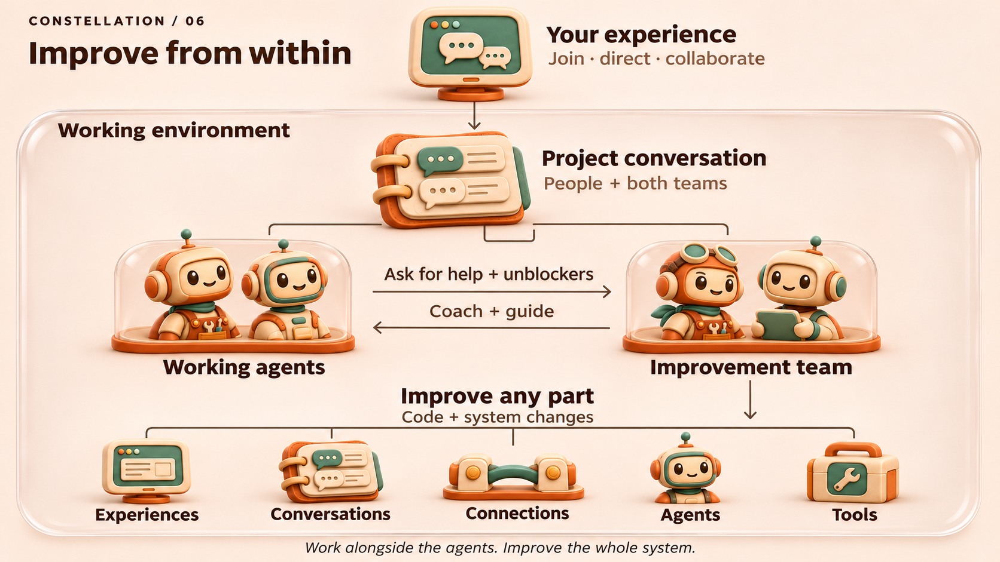
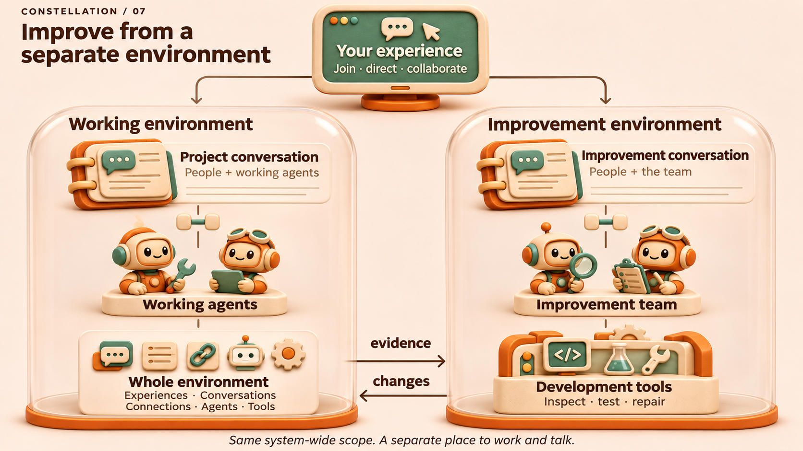

Your agents.
Room to invent.
Work with a team of persistent agents across the places you already use. Build on shared capabilities, and give each part room to develop in its own way.
Five building blocks. Many ways to combine them.
An experience presents a conversation. Agents participate through connections and use shared or private tools. These are boundaries people can build around, with freedom inside each one.

See how it fits together
2 minutes 8 secondsDownload the filmRead the transcriptCaptions
An illustrated introduction to the architecture, rather than a demonstration of deployed products.
Freedom inside an agent
One engine, an inner team, or a different design entirely. A dependable outward boundary lets builders explore how an agent works without making everyone else adopt its internals.

Improve every part
An improvement team can work alongside other agents or from a separate environment. People can join the conversation in either arrangement. Both can improve the whole system.


Build on what’s here
Start with the intended outcome, find the part that owns the behavior, and build on the work already there.
- Vision
- The experience we want to make possible.
- Shared promises
- The agreements between independently developed parts.
- Find a component
- Repositories, interfaces, and places to contribute.
The vision and contracts in the repository are the canonical documents. These illustrations explain the direction; component documentation defines available interfaces.